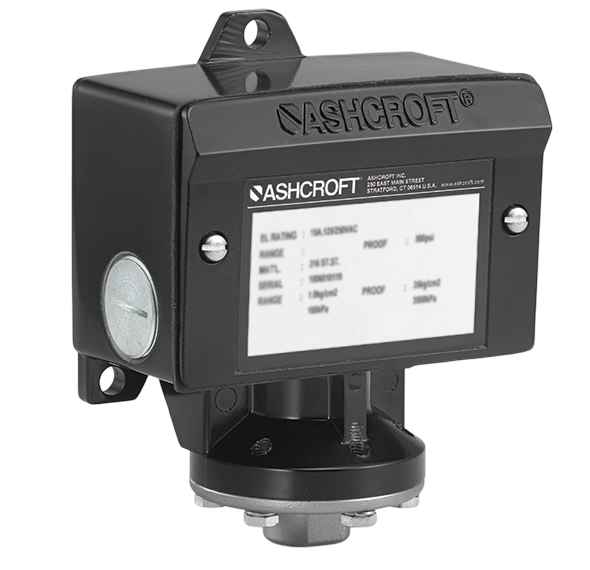
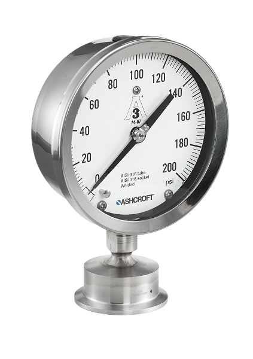
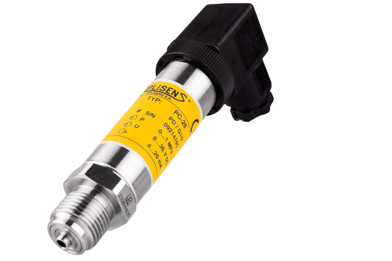

Products
Instrumentation products for measurement, monitoring, and control applications.
Industrial Instrumentation Solutions
We support industries with practical instrumentation products, technical knowledge, and dependable service.
View Products.png)








Instrumentation products for measurement, monitoring, and control applications.
Focused support for selecting the right instruments for your process needs.
A simple, reliable approach built around industrial performance and long-term use.